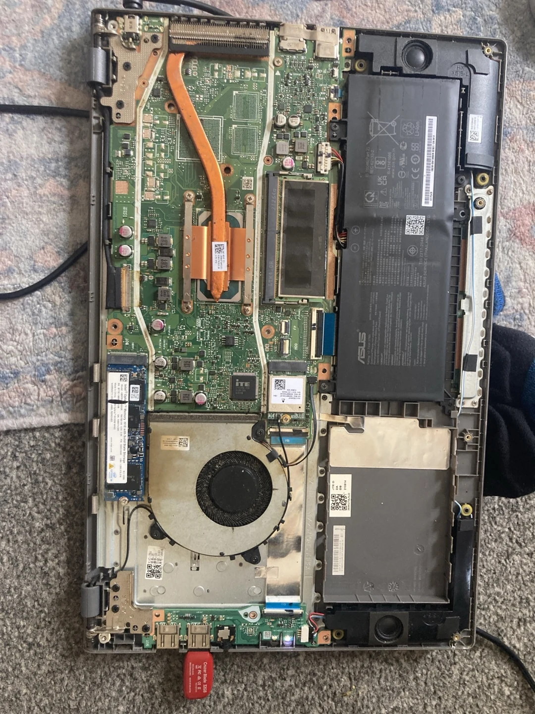

Start here: try Mint before replacing anything
Linux Mint Cinnamon is a desktop operating system with a familiar menu, taskbar, file manager and settings panel. It gives me a comfortable place to browse, code, organise files and run the software behind my home server. You do not need to learn every terminal command before using it.
- Back up the files you want to keep, then check that your machine is compatible.
- Download the Cinnamon ISO from Linux Mint and verify it.
- Write that image to a spare USB stick.
- Boot the USB and test the live desktop.
- Install only after checking which disk the installer will use.
Why I wanted something different
My relationship with Windows had already become fairly distrustful. The ads, account nudges and pressure to use more Microsoft services made the computer feel less like something I controlled. I want an operating system that helps me use my machine, rather than turning the desktop into another place to sell me things or ask for more data.
Then my ASUS laptop stopped booting after a Windows update. The old NVMe became inaccessible, and troubleshooting and recovery attempts did not give me everything back. Losing access to years of files was enough to make me rethink how much I depended on one machine and one installation.
I started rebuilding the tower with parts I already had and modest upgrades where they would help. Installing Mint was a way to get back to making things, while learning more about the hardware and the system running on it.

1. Check the device, then choose Cinnamon
The regular Mint Cinnamon image is intended for compatible 64-bit Intel/AMD computers. On a working Windows PC, check Settings → System → About for its system type. On a Mac, use About This Mac to identify the processor before choosing any installer.
| Device | Which route? |
|---|---|
| Compatible Intel/AMD desktop or laptop | Use the standard Mint Cinnamon ISO and test the live session. |
| Intel Mac | Research that exact model first. Wi-Fi, boot security and other hardware can need extra work, particularly on T2-equipped models. |
| Apple Silicon Mac | The standard Mint image is not the installer for it. Check the Asahi Linux project and its current model-support information. |
| Raspberry Pi | Use an ARM operating system such as Raspberry Pi OS through Raspberry Pi Imager. Many Linux skills transfer; the Mint PC image does not. |
2. Download and verify the ISO
Visit the official download page, select Cinnamon and choose a download mirror. An ISO is the disk-image file containing the installer. Keep the matching checksum and signature files from the same release.
Mint’s verification guide explains two different checks: the checksum tests that the download is intact; the signature checks who signed the checksum list. Matching a checksum alone does not establish authenticity. If you already have Mint, its right-click Verify option can guide you through both.
3. Write the USB and boot it
On Mint, open USB Image Writer or right-click the ISO and choose Make Bootable USB Stick. On Windows or macOS, the Mint guide describes using Etcher. Select the ISO, select the spare USB by its capacity and name, then write it. Copying the ISO into an ordinary folder on the USB is not the same as writing an installer.
Restart and open your computer’s boot-device menu. The key varies by manufacturer, so check the machine’s instructions. Select the USB, then start the live Mint desktop. Test Wi-Fi, sound, keyboard, screen resolution and any peripherals you depend on.
4. Install alongside, or replace the old OS
Open Install Linux Mint on the live desktop. Choose your language, keyboard, network and the relevant installation options. If you want to keep Windows, an alongside option may be offered; it still needs enough free disk space and a backup. Availability depends on the existing partition layout.
For a complete replacement, choose Erase disk and install Linux Mint only when the selected disk contains nothing you still need. Read the proposed changes carefully before accepting them. Create your username and password, complete installation, restart and remove the USB when asked. Manual partitioning is a separate subject; it is not a step to guess at on a drive full of important files.
5. Make the new desktop yours
Run Update Manager, check Driver Manager, then install applications through Software Manager. Cinnamon lets you adjust themes, panels, applets, shortcuts and workspaces without turning every change into a terminal exercise.
Set up Timeshift system snapshots, and keep a separate backup of your personal files. A system snapshot and a copy of your photos or project folders solve different problems. Check what is actually included before relying on either.
What the tower taught me
The tower in my notes uses a Ryzen 3 1200, 8GB of DDR4 and a Gigabyte A320M-S2H V2 board, alongside reused graphics and storage hardware. I wanted a normal Cinnamon desktop that could also keep Jellyfin and file sharing running.
It has not been a magic cure for every hardware issue. I tested a memory stick, checked disk mounts and worked through logs reporting GPU lockups and other errors. One memory-test pass without errors was useful evidence, not proof that the whole system was healthy.
What changed was my willingness to investigate. I can check the logs, replace a component and understand a little more each time. The old laptop drive also taught me to treat recovery as a separate task: stop writing to a suspect disk, recover to another device, and do not install a new OS over the files you hope to rescue.